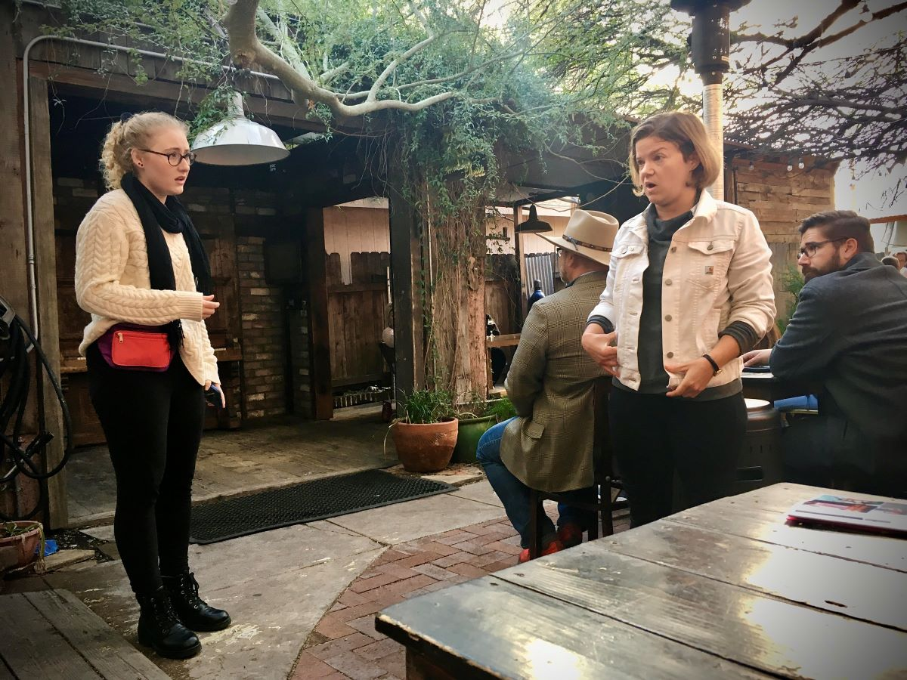
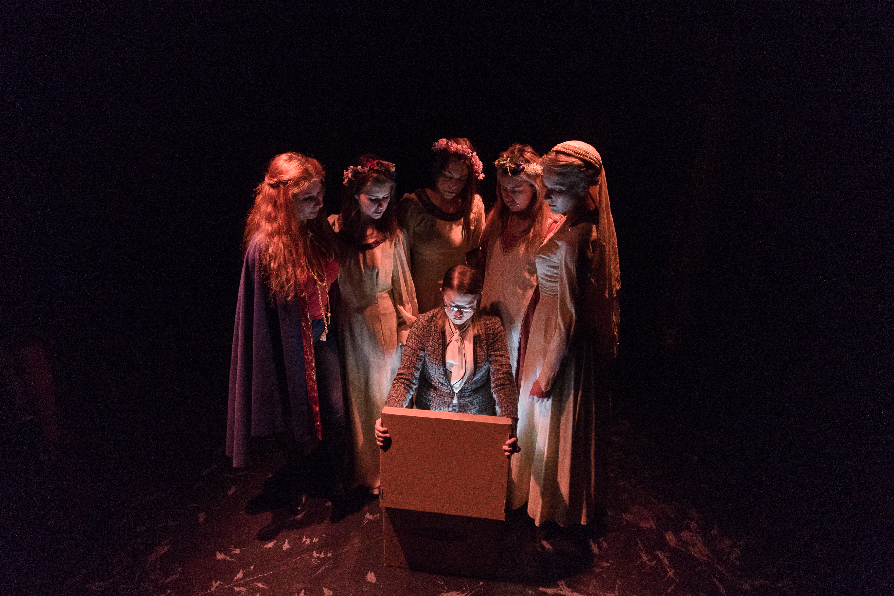
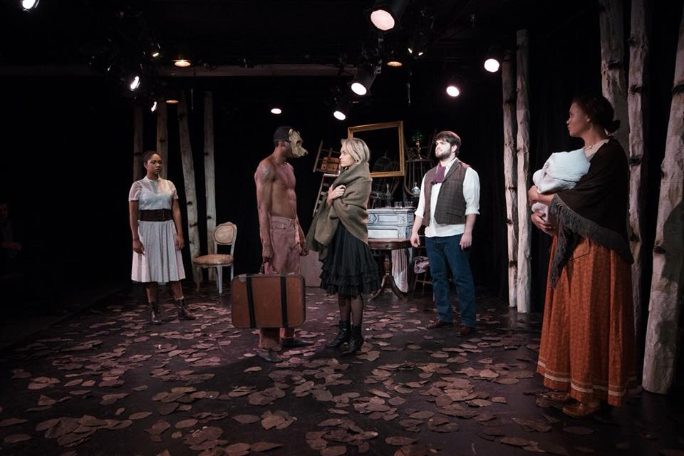

Director, Dramaturg, & Producer
As a dramaturg and director, I approach storytelling from a global level with careful consideration of how each element of a production contributes to the overall meaning. My areas of expertise include site-specific/immersive theatre, devised performance, new play development, and adaptation.
Producing
- Full productions, readings, & workshops
- Festivals
- Casting
- Budgeting
- USA, IATSE, AEA, LORT regulations
Directing
- Site-specific
- Immersive
- New plays
- Staged readings
- Workshops
Dramaturgy
- New play development
- Dramaturgical research
- Shakespeare
- Post-dramatic theatre
- Audience engagement
Productions

Love and Information by Caryl Churchill
Director & Producer
Directed by Anna Jennings
A site-specific production at Café Passé as part of the Tucson Fringe Festival 2019.
Read more
Death of Arthur UA Studio
Co-Director & Co-Writer
Directed by Anna Jennings, Fly Jamerson, et al
A devised performance created collaboratively over a six-week process using the Moment Work devising technique created Greg Pierotti and the Tectonic Theatre Project.
Read more
Insigificance is sickening... by Fly Jamerson
Dramaturg
directed by John Muszynski
A post-dramatic adaptation of Anton Chekhov's classic play Three Sisters originally written in 1901.
Read more
South Coast Repertory's 2022 production of Our Town by Thornton Wilder. Photo by Matt Gush/SCR.
Our Town by Thornton Wilder
Dramaturg
directed by Beth Lopes
Described by Edward Albee as "the greatest American play ever written", it presents the fictional American town of Grover's Corners between 1901 and 1913 through the everyday lives of its citizens.
Read morecaption
Clean-Espejos by Christine Quintana
Dramaturg
Directed by Lisa Portes
Pacific Playwrights Festival Reading, 2021.
Worlds and secrets get revealed, lives change and two women from diverse backgrounds confront their pasts in the engaging drama Clean/Espejos by Christine Quintana, with Spanish translation and adaptation by Paula Zelaya Cervantes. Pacific Playwrights Festival Reading. Press.
caption
Comedy of Errors by William Shakespeare
Director & Producer
Metcalfe Park, Kingman, AZ. 2015. Press.
caption
Almost Crazy a collection of short plays by Christopher Durang
Director & Producer
Metcalfe Park, Kingman, AZ. 2013. Press.
caption
A Shot Rang Out by Richard Greenberg
Assistant Director
Directed by Tony Taccone
Segerstrom Stage, South Coast Repertory, 2021. More.
caption
American Mariachi by José Cruz Gonzalez
Assistant Director
Directed by Christopher Acebo
Arizona Theatre Company, 2019.
caption
Othello by William Shakespeare
Assistant Director
Directed by Brent Gibbs
Arizona Repertory Theatre, 2015.
caption
The Arsonists by Max Frisch
Assistant Director
Directed by Laura Lippman
UA Studio Series, 2013.